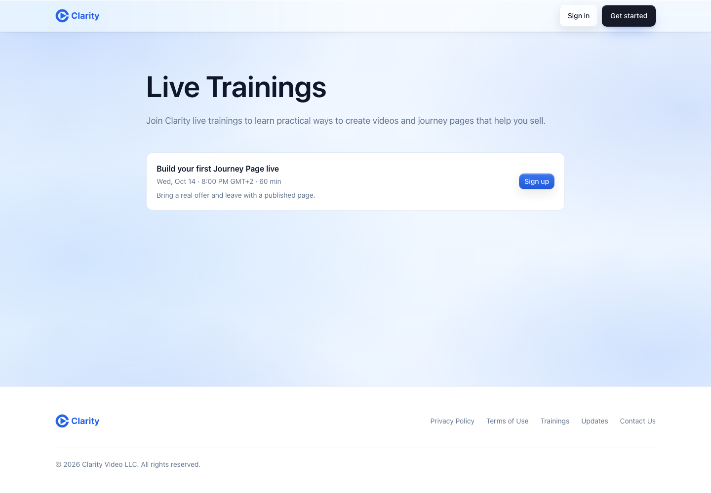
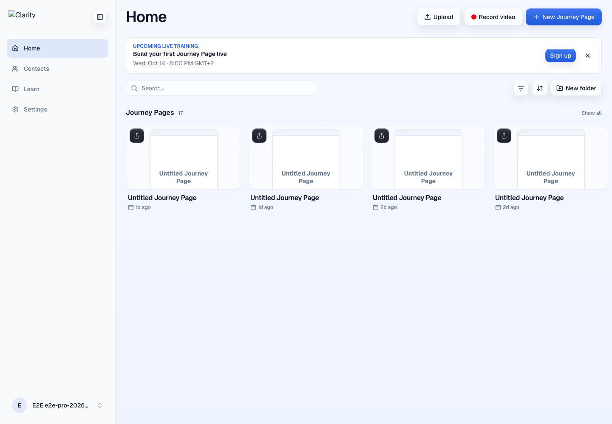
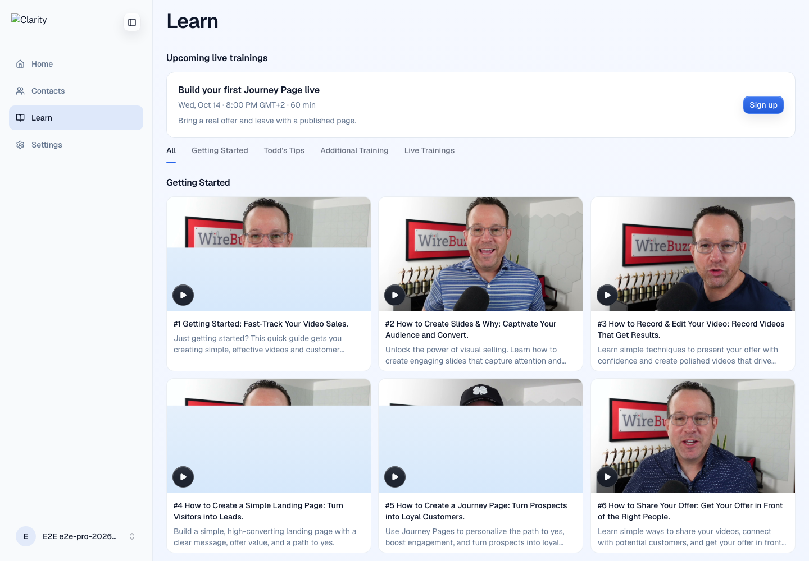

Local run on branch feat/live-trainings with a temporary fixture: one training on Oct 14 and one finished, recorded session. The viewer's timezone was GMT+2, so times show in that zone.
Public page /trainings

Home banner

Learn, upcoming section and the Live Trainings tab

Learn, the recording playing in the Live Trainings tab